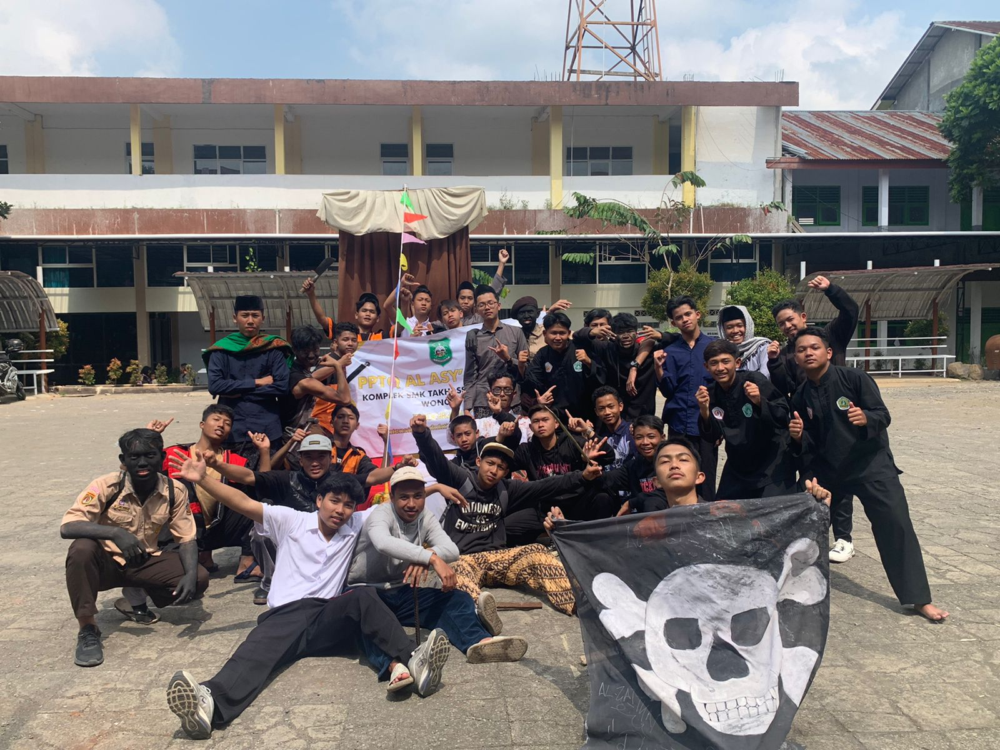

Berita Terkini
Ngaji Pasaran
Ngaji Pasaran pada bulan Ramadhan 1444 H

Karnaval HKQ PPTQ Al-Asy'ariyyah
Pada saat Haflah Khotmil Qur'an Al-Asy'ariyyah
Ziarah Wali Songo
Ketika ziarah di Mbah Kholil Bangkalan

Penutupan Aktivitas
Dokumentasi penutpan aktivas